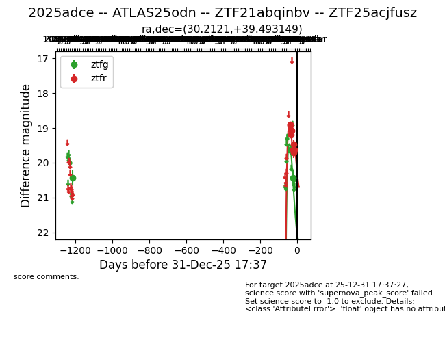
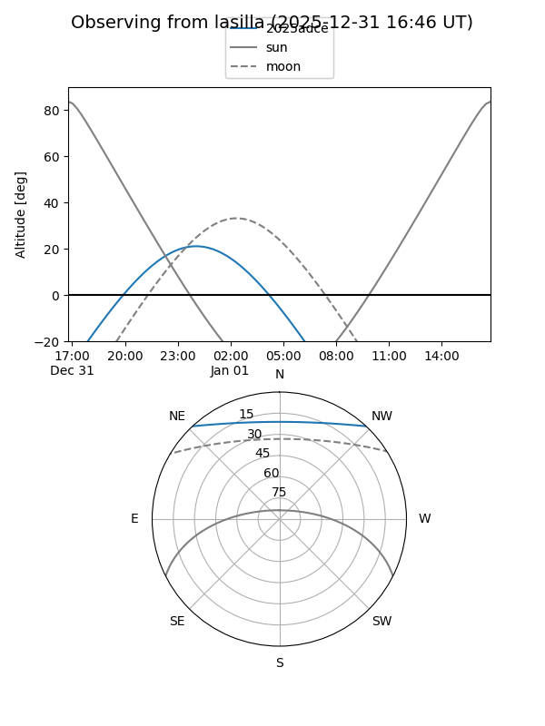
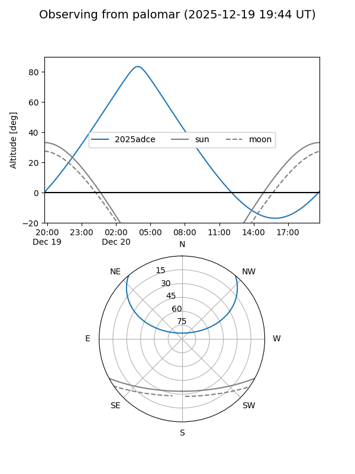
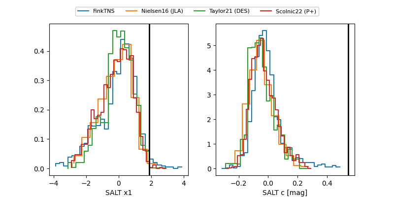

2025adce
Target 2025adce at 2025-12-20 04:04
Aliases and brokers:
FINK: fink-portal.org/ZTF21abqinbv
Lasair: lasair-ztf.lsst.ac.uk/objects/ZTF21abqinbv
ALeRCE: alerce.online/object/ZTF21abqinbv
TNS: wis-tns.org/object/2025adce
YSE: ziggy.ucolick.org/yse/transient_detail/2025adce
alt names
ZTF21abqinbv (ztf)
ZTF25acjfusz (fink_ztf)
2025adce (tns,yse)
ATLAS25odn (atlas)
Coordinates:
equatorial (ra, dec) = 30.2121,+39.49315
equatorial (HMS+DMS) = 02:00:50.89,+39:29:35.33
galactic (l, b) = (137.2482,-21.44124)
Flags:
Photometry:
last ztfg=20.44, ztfr=19.63
4 ztfg, 9 ztfr detections
Lightcurve

Visibility


Additional plots
